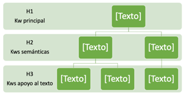
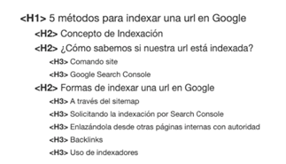

Etiquetas Hs: Jerarquía de encabezados
Los encabezados servirán para jerarquizar y ordenar el contenido de una
página, por orden de
importancia (h1, h2, h3…).
Gracias a los encabezados destacaremos párrafos y contenidos más relevante
sobre otros más secundarios. Es recomendable, utilizar párrafos de textos sobre los que
ubicarlas.

Imagen de jerarquía de Hs
Un error muy común es utilizar varias etiquetas h1 en una misma página,
muchas de ellas sin valor
SEO como “deja un comentario aquí”,
“suscríbete a nuestra newsletter”, etc... Lo normal es no llegar mucho más de h3 o quizá h4, ya
dependerá del diseño que tengamos,
pero a nivel SEO, suele prestarse zatención en la optimización principalmente en los h1 y h2 y
h3 usando el resto para tener una óptima experiencia de usuario.

Ejemplos de Hs